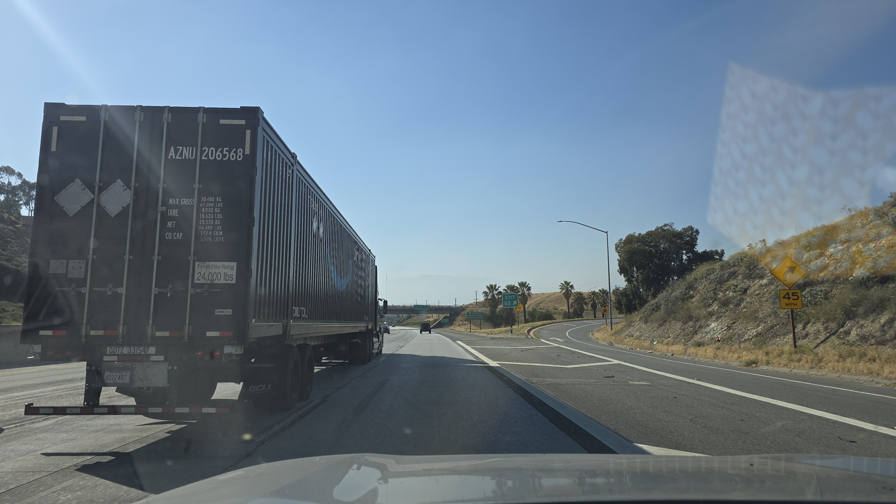
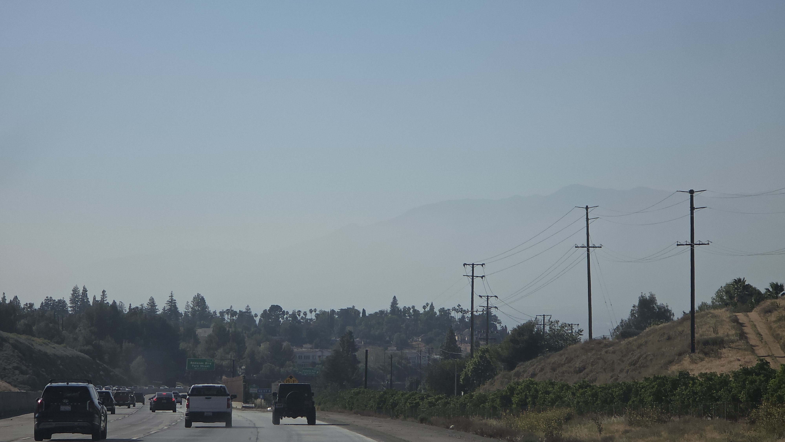

Project Story
Redlands Green Shield
The Origin: A Vision Through the Smog
My journey with this project began with a simple observation during my daily commute. Driving back and forth between San Bernardino and Yucaipa along the I-10, I noticed the persistent, gray-greenish smog covering the valley almost all the time.


In comparison to other cities in California, San Bernardino County’s respiratory health situation is noticeably challenging. The region has become the largest warehouse and logistics hub in the state, which has drastically increased heavy-duty vehicle emissions. Our high temperatures and intense sunlight trigger chemical reactions between vehicle exhaust and industrial gases, forming ground-level ozone.
The Inspiration
On October 15, 2025, I visited the Esri Fall Education Open House in Redlands. During the campus tour, I learned that the high density of trees on the Esri campus works like a natural air conditioner—lowering the local temperature by 2°F and cleaning the air even in the hottest summers.
"How many trees do we need to plant in Redlands to lower the temperature by 2°F across the whole city?"
As an engineer, I want to answer this question. This project is a living effort to use GIS and spatial analysis to design a "Green Shield" for our community.
Technical Toolkit
To build this map and manage the environmental data, I am utilizing:
- ArcGIS Online: Project visualization and sharing.
- Spatial Analysis: Environmental impact modeling.